SEOJIN YANG
"AI와 웹을 좋아하는 개발자"
ABOUT ME
✓Process of growth & School life/experience
미국에서 연구년을 보내신 어머님을 따라 초등학교 저학년을 미국에서 보낸 경험은 저의 정체성 확립에 큰 영향을 주었습니다. 필력을 인정받아 시집이 출간되어 시인의 꿈을 키운 적도 있었고, 또래보다 큰 키로 농구시합 중에 센터를 도맡아하면서 시합에 나가 농구재능을 뽐내며 선수에 대한 꿈도 키운적이 있습니다. 유년시절의 이와같은 다양한 경험은 분명 '한계없는 창의성과 상상력, 그리고 틀에 갖히지않는 사고력을 가진 개발자 양서진'을 만드는데 이바지했으리라 자신합니다. 고교에서 대학입시를 위한 공부를 하며 확실한 결과가 있는 문제를 좋아하고, 그 결과를 내기 위한 효율적인 과정을 찾는 것에 흥미로움을 느끼는 타입이라는 것을 발견했습니다. 그 결과 수학 공부가 재밌었고, 자연스럽게 공학계열에 대한 관심이 생겼습니다. 이후, 인문계열 학생이 교차지원 가능한 융합특성화 자유전공학부에 지원하게 되었고 이는 제가 갖고있는 인문학적 소양과 공학계열에 대한 지적 호기심을 충적시켜준 최적의 선택이었다고 자부합니다. 주전공 소프트웨어, 융합전공은 빅데이터/인공지능을 선택하면서 IT분야에서 융합형 개발자로 나아갈 기초적 소양을 다졌습니다. 주전공에서는 java, c, c++을 배우고 융합전공에서는 python, R을 접한 것은 일반적 학부생들보다 다양한 언어를 배울 수 있는 기회였으며 융합전공 과목을 통한 통계학, 수학과 학우분들과의 다양한 토론 및 협업은 융합형 사고를 키워주었습니다. 이와 같은 배움을 토대로 IT 전문가로 발돋움하기 위해 부족하지만 나아가는 자세로 과거에도 현재도, 이후 미래도 '양서진'은 계속 노력할 것입니다.
✓Strengths and weakness of personality
(추가예정)
✓Learned Courses through Major
-DATABASE
1)데이터베이스의 기본 개념, 데이터 모델의 목적 및 종류, ER 데이터모델, 실세계에서 주로 사용되는 관계형 데이터베이스 모델 공부
2)트랜잭션의 개념을 익히고, 동시성 제어 방법과 문제점, 해결 방안들에 대해 습득하고 이를 바탕으로, 객체 관계형 상용 데이터베이스 시스템인 UniSQL/X에서의 데이터베이스 프로그래밍을 실습
-ARTIFICIAL INTELLIGENCE
1)지식 표현 및 추론, 탐색을 통한 문제 해결, 기계학습, 자연어 처리 등 인공지능의 기본 개념 및 기법에 대하여 학습
2)전문가 시스템, 데이터마이닝 시스템, 스마트 시스템 등의 지능형 시스템의 구조 및 그 응용분야에 대한 이해를 통하여 다양한 인공지능 문제를 학습
-ALGORITHM
1)프로그램 복잡도, 정열(sorting), 다이나믹 프로그램, 그래프 문제, NP-comple 문제를 학습
2)c언어를 활용해 효율적인 알고리즘을 탐구하고 실습
-Probability and Statistics
1)표본공간과 사상, 확률분포, 표본분포, 통계적 추론(추정 및 검정) 등의 통계학의 기초적인 개념과 이론을 학습
2)R을 통계적 지식을 실습해보며 프로젝트를 통한 학습의 응용을 시도
GRADUATE
Seohyeon Elem. & Middle.
2004 - 2013
Yeongdeok Woman High school
2013 - 2016
Soongsil Univ.
2018 - 2023
(별첨1)(major)software engineering & (convergence major)BigData/AI
CERTIFICATE
TOEIC
(별첨2) 875
PHOTOSHOP CC 2015
(별첨3)
MOS EXCEL
(별첨4)
SQLD(SQL Developer)
(별첨5)
ADsP(Advanced Data Analytics Semi-Professional)
(별첨6)
빅데이터분석기사 필기(Advanced Data Analytics Semi-Professional)
(별첨7)
EDUCATION
AI Web Bootcamp
2022.07-2022.09
(별첨8)html/css/js & React & node.js
NAVER AI BASIC 2023 STUDY
2023.01-NOW
(별첨9)Python & DeepLearning
LIKELION SEOUL
2023.02-NOW
(별첨10)FE School
AWARDS
SAMSUNG BIXBY HACKATON
2019
(별첨11)효율적인 학업 시간표 프로젝트를 만들어 우수상 수상.
PROJECT
yogA!
-요가자세 교정 웹 프로그램
https://github.com/zkdk1241/2022_AI-YangjaeHub
NewYork Yellow taxi
-NewYork Yellow taxi 데이터를 기반으로한 데이터 분석을 통해 뉴욕 택시 이용객과 운전사 분들의 쾌적한 택시 이용을 돕는 프로그램
https://github.com/zkdk1241/NewYork-CHEESECAKE
MBTI TEST
-mbti테스트를 통해 내 안에 숨어있는 제2의 직업을 찾기
preeminent-valkyrie-b366d5.netlify.app
Document. 1
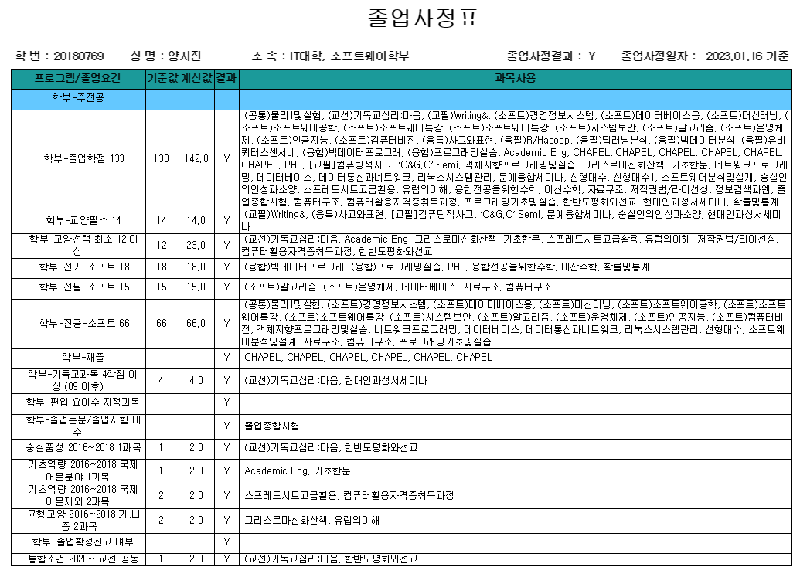 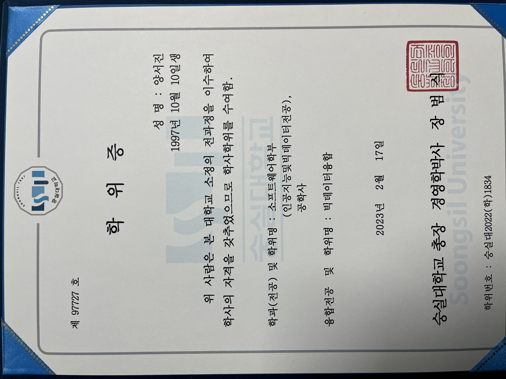Document. 2
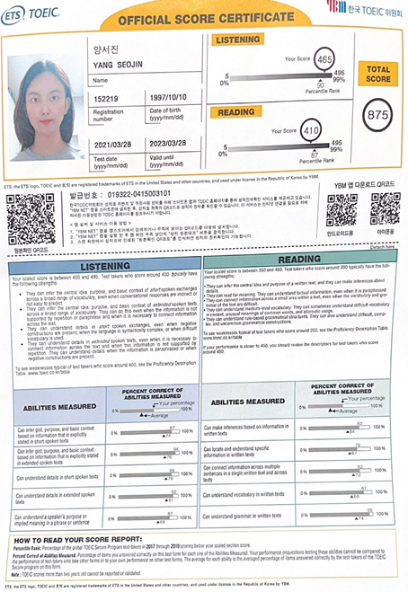Document. 3
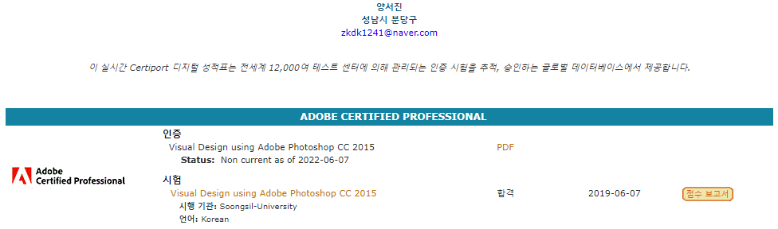Document. 4
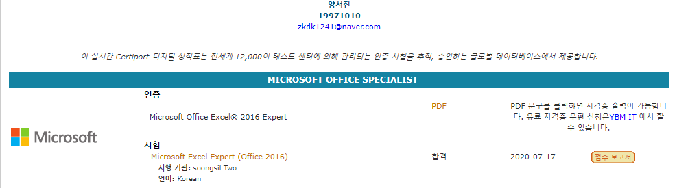Document. 5
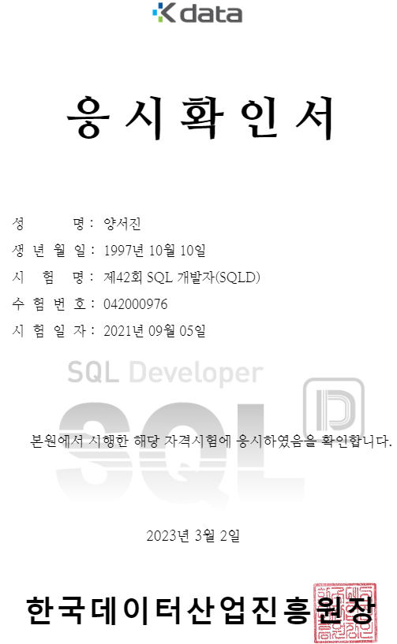Document. 6
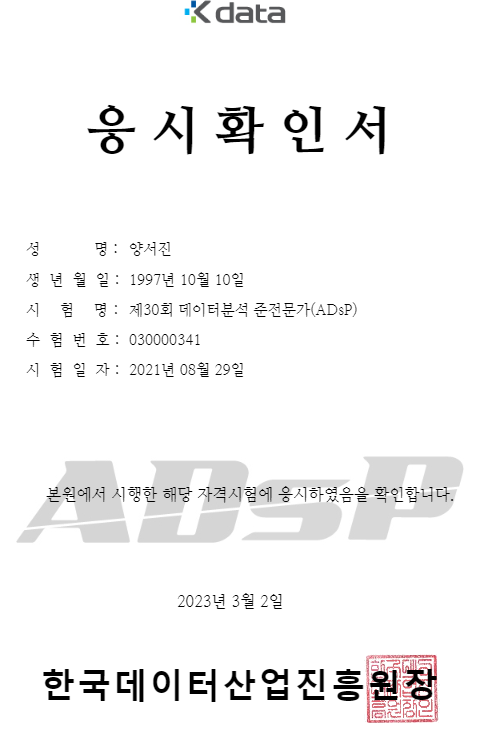Document. 7
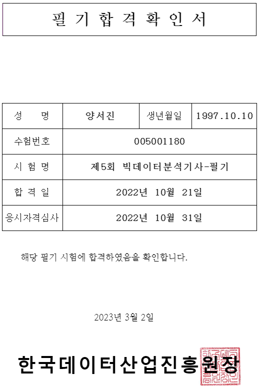Document. 8
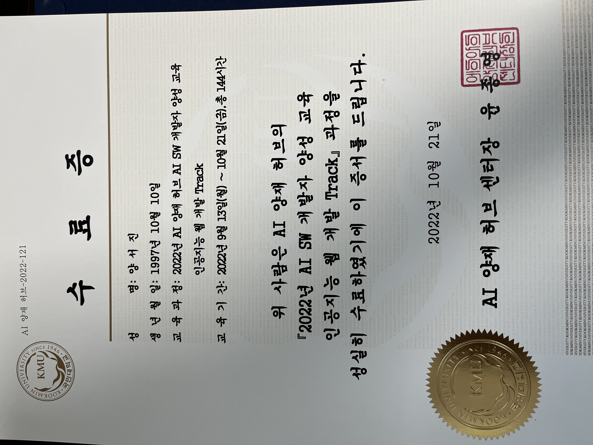Document. 9
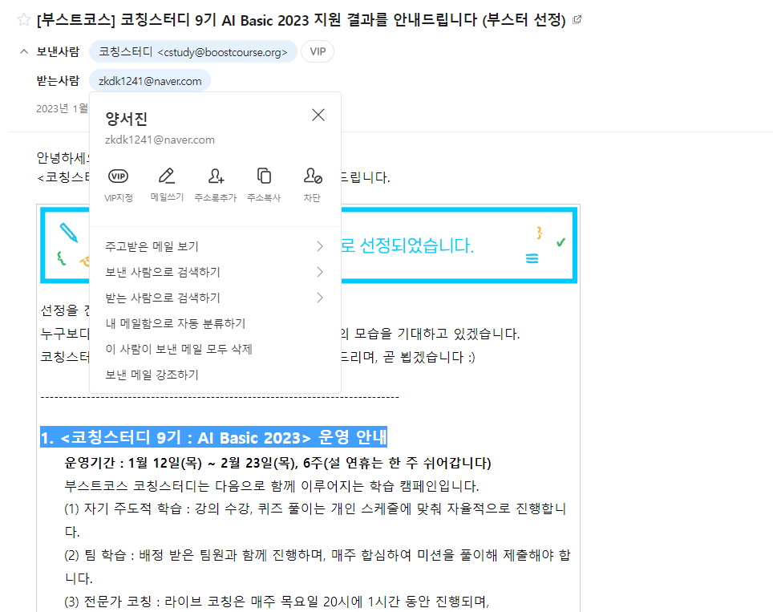 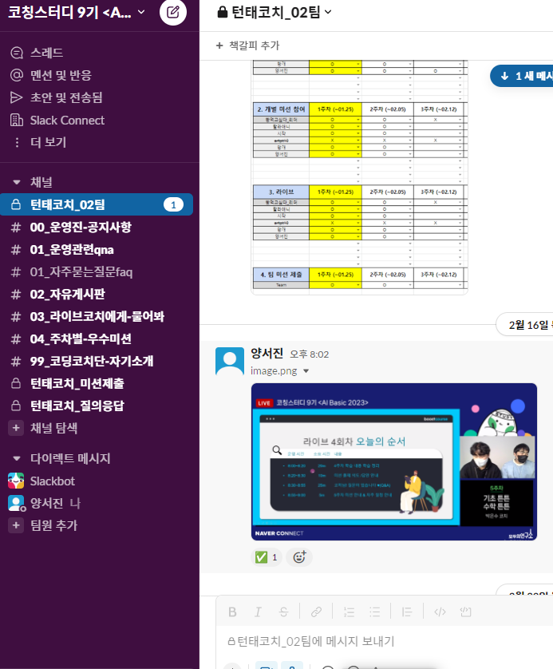Document. 10
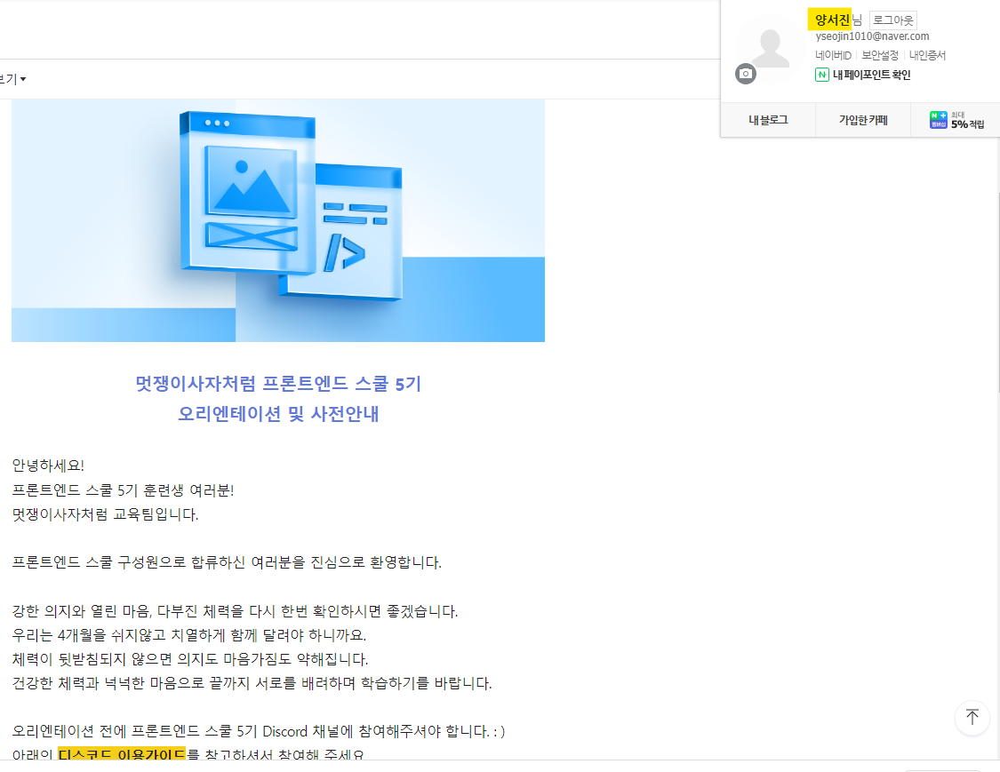Document. 11
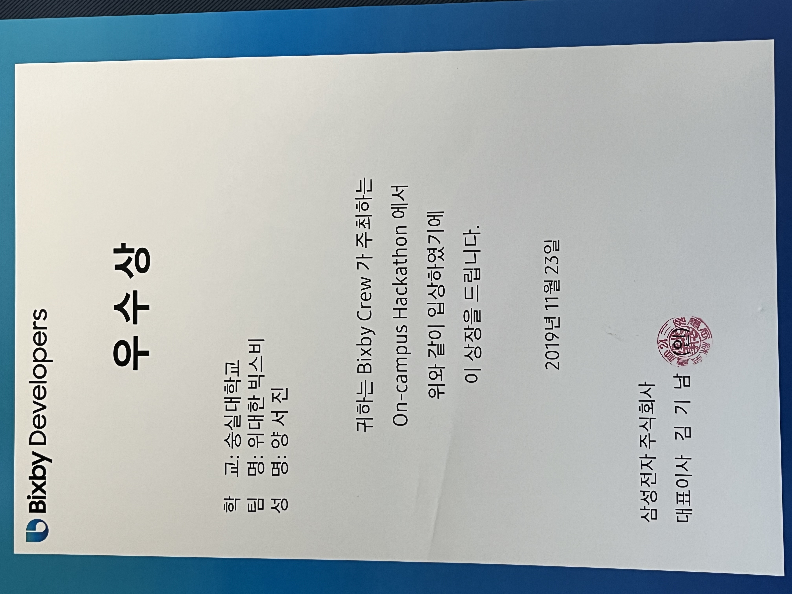